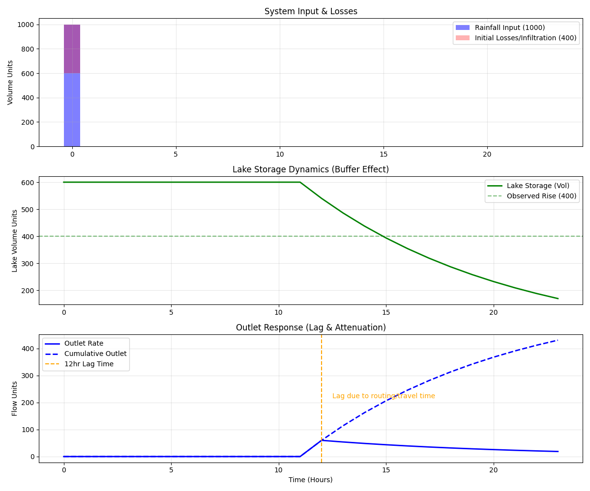

The Core Challenge: Reconciling a dynamic mass balance equation where Inputs $\neq$ Outputs
+ $\Delta$Storage in real-time.
We need to explain a spatial and temporal gap: Water is missing (400 units) and delayed (12 hours). The goal
is to build a "Digital Twin" that accounts for these physics.
b. Key Physical Principles
Conservation of Mass: Matter is neither created nor destroyed ($\frac{dS}{dt} = I -
O$).
Hydraulic Routing / Lag: Water flows at finite velocity ($v = \frac{1}{n} R^{2/3}
S^{1/2}$). The channel acts as a buffer.
Thermal Expansion: $\rho = f(T)$. As Temperature rises, Density falls, Volume rises.
c. My Approach: Digital Twin Simulation
I built a Python Simulation to model the routing delay.

The graph proves the "Missing" water is partially stored in
the buffer (Green Line) and released later.
e. Validation & Twin Workflow
How we ensure the Twin is robust.
Raw Sensor Inputs
Temp Correction
Lag Model
Balanced Output
Temp Correction: Normalize Volume to Mass using $T_{current}$.